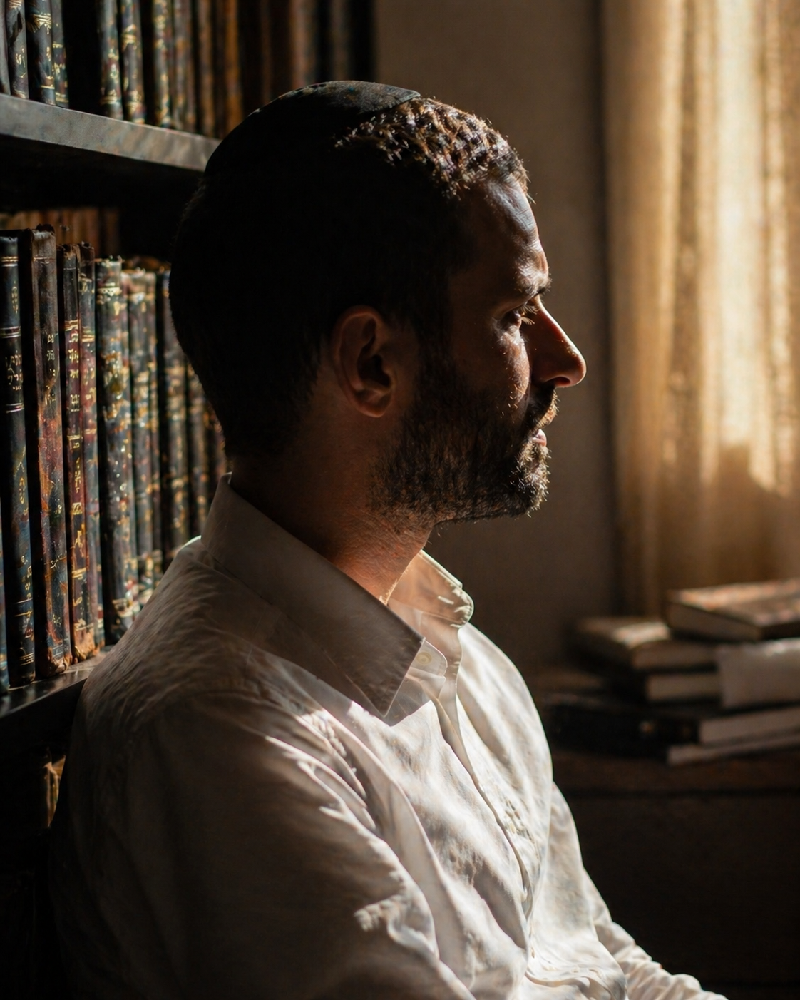

מי אנחנו
בית אברהם הוא יותר ממסמך חזון. הוא הצומת שבו נפגשים סיפור אישי, חמש־עשרה שנות עבודת חסד, וזיהוי של חוסר אמיתי בחברה הישראלית. כאן תמצאו את האנשים, את התובנה, ואת הדרך.

המייסד
השם שלי הוא אברהם. לא במקרה. אברהם אבינו בנה את עצמו בעמוד החסד, ואף שלא בחרתי בשם הזה, הוא תיאר את הדרך שלי הרבה לפני שהבנתי אותה.
חמש־עשרה שנים אני מתנדב בארגוני חסד. לא מהמשרד, מהשטח. ביקור חולים, ליווי משפחות בתקופות קשות, סיוע לקשישים, וחלוקת מזון. ארבע שנים אני חובש מד״א פעיל, יוצא לקריאות גם באמצע יום עבודה. למדתי לראות אנשים בעיתות משבר, ולמדתי שמה שעוצר אותם מלשבור הוא לא תרופה ולא כסף — זו נוכחות אנושית קבועה.
במקביל בניתי את FutureFlow — חברה שמפתחת מערכות תוכנה לארגונים חברתיים ועסקיים בישראל. לקוחות אמיתיים, מוצרים שעובדים יום־יום, צוות שבונה לאורך שנים. זאת הוכחה שאני יודע לקחת רעיון ולהפוך אותו לדבר חי. בית אברהם הוא הצעד הבא — לקחת את כל הניסיון הזה ולנתב אותו לדבר אחד שגדול מאיתנו.
"אם ה' שם את הרעיון בראש שלי, סימן שהוא רוצה שאני אעשה עם זה משהו."
הרגע
בראש השנה תשפ״ו ישבנו אצל חמותי בארוחה. סבא של אשתי, בן 98, ישב לצידנו. הוא גר אצלה כבר שנים. שאלנו אותה איך היא מסתדרת לטווח ארוך, והעלינו את האפשרות להעביר אותו לדיור מוגן. חמותי ענתה במשפט אחד: "הוא ימות שם. כאן הוא רואה את הנכדים והנינים שבאים. שם הוא יהיה לבד."
המשפט הזה לא יצא לי מהראש. חשבתי על קרובות משפחה שגדלו בדירות רווחה. על הילדים שאני פוגש חמש־עשרה שנים בעבודת חסד. על האנשים שאני מטפל בהם במד״א, שמסתיימים את חייהם בלי משפחה לידם. אנשים מכל גיל מבקשים אותו דבר: בית, אנשים שמכירים אותם, ומקום שאליו אפשר לחזור.
ואז זה התחבר. אם בית אבות כפי שאנחנו מכירים מנתק את הזקן מהמשפחה, ופנימייה מנתקת את הילד מהבית, ודירת רווחה מנתקת את הנערה מהמודל המשפחתי — אולי הפתרון הוא לא לתקן את שלושת המוסדות, אלא לבטל את ההפרדה ביניהם. לבנות מקום אחד שבו אף אחד לא לבד.
זה היה הרגע. השאר זה רק עבודה.
איך הרעיון הופך לכפר — לפירוט המלא ←לא פרויקט של אדם אחד
מוסד שמשפיע על שלוש אוכלוסיות פגיעות לא יכול להיבנות על תחושת בטן של מייסד אחד. בית אברהם בנוי מהיום הראשון עם חלוקת אחריות ברורה, ועדת יועצים מקצועית, ומבנה מנהלי שמאפשר לכפר לתפקד גם כשהמייסד לא בחדר.
אבי ברונר — מייסד ומנכ״ל. אחראי על החזון, אסטרטגיה, ופיתוח עסקי.
בתפקיד מאז 2026.
מנהלי יחידות (כפר נוער, מבוגרים, נערות), עו״ס בכירים, צוות רפואי, רב, משגיח כשרות, מדריכי משפחתון, אברכים ומדריכות. סך הכל 50–60 אנשי צוות במשרה מלאה.
גיוס יחל בשלב הקמה.
3–7 יועצים בכירים בתחומי רווחה, רגולציה, אדריכלות, פילנתרופיה, ורבנות. תפקידם: ביקורת מקצועית, פתיחת דלתות, ושמירה על הסטנדרט המקצועי לאורך זמן.
בגיוס פעיל. להצטרף ←
גוף ניהול עליון של העמותה. אחראי על אישור תקציב שנתי, החלטות אסטרטגיות, ופיקוח על שקיפות וממשל תקין. כולל את המייסד, אנשי ציבור, ונציגי תורמים.
יוקם בשלב גיוס תורם עוגן.
הדרך שלפנינו
שלב 1
השקת אתר אינטרנט. גיוס ועדת יועצים ראשונה. שיחות עם מנהלי מוסדות מנוסים בארץ. רישום עמותה רשמית. בנייה של מסמכים מקצועיים.
פעיל · 2026
שלב 2
פגישות עם תורמים פוטנציאליים בארץ ובחו״ל. גיוס תורם עוגן ראשון. איתור קרקע מתאימה באזור הצפון (קרית אתא וסביבותיה). בדיקת היתכנות ראשונית מול משרד הרווחה.
צפוי 2026–2027
שלב 3
עבודה עם משרד אדריכלים מנוסה במוסדות רווחה. אישורי רגולציה ממשרדי הרווחה, החינוך, והבריאות. גיוס מימון בנייה מלא. הכנת תכנית עבודה רב־שנתית.
צפוי 2027–2028
שלב 4
בנייה בשלבים, החל מהמשפחתונים והבית כנסת המרכזי, ולאחר מכן הדיור המוגן ומבני השירות. גיוס ראשי הצוות הבכירים שיובילו את ההפעלה.
צפוי 2028–2030
שלב 5
פתיחה הדרגתית: התחלה עם קבוצה קטנה של ילדים במשפחתונים, נערות בוגרות, ומבוגרים ראשונים. כניסה לקצב מלא תוך 18–24 חודשי הפעלה.
צפוי 2030–2032
לוחות הזמנים תלויים בקצב גיוס תורם עוגן ובאישורי רגולציה. הם מציגים תוואי ריאלי, לא הבטחה.
אנחנו מחפשים יועצים
נשמח לדעת. גם אם אינך בטוח שזה זמן לכם, פגישה ראשונה היא לא התחייבות. זו היכרות.
בואו נדבר